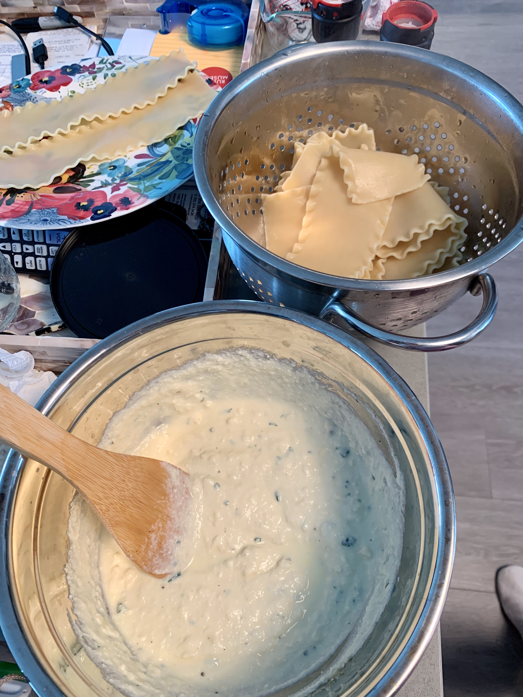
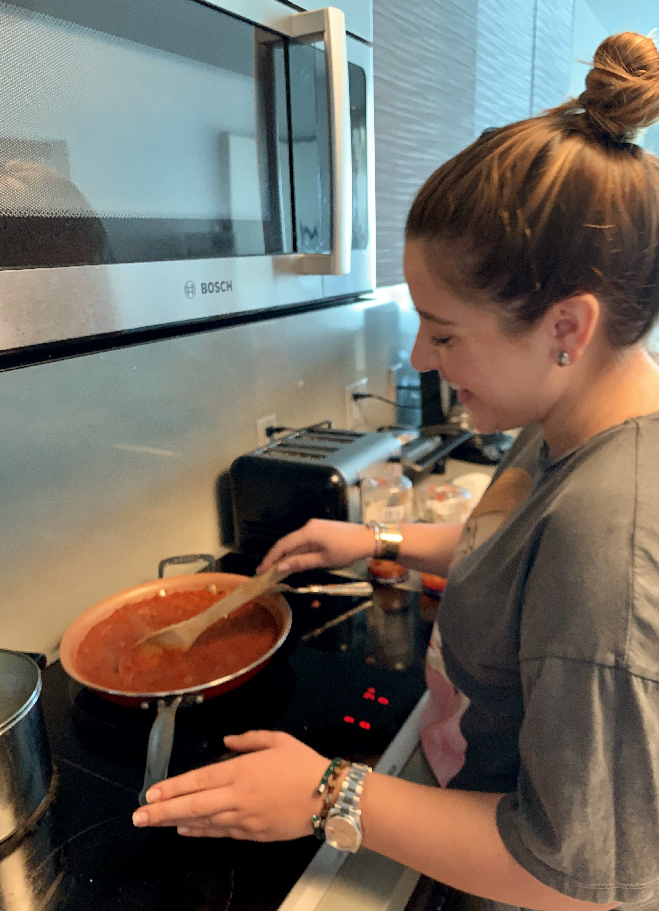
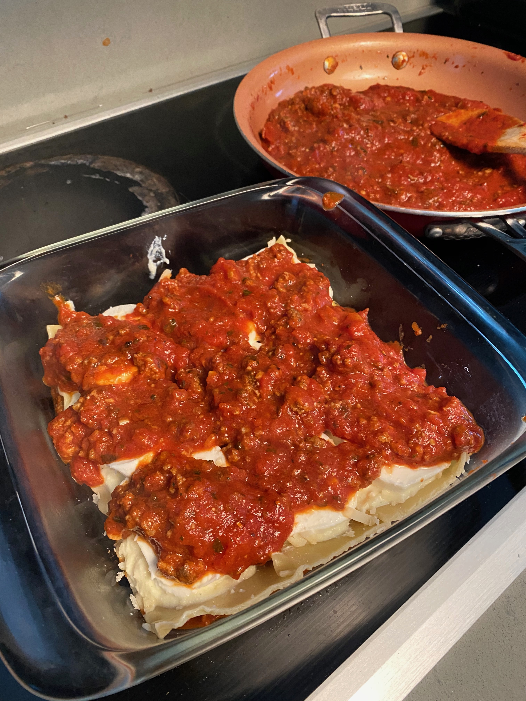
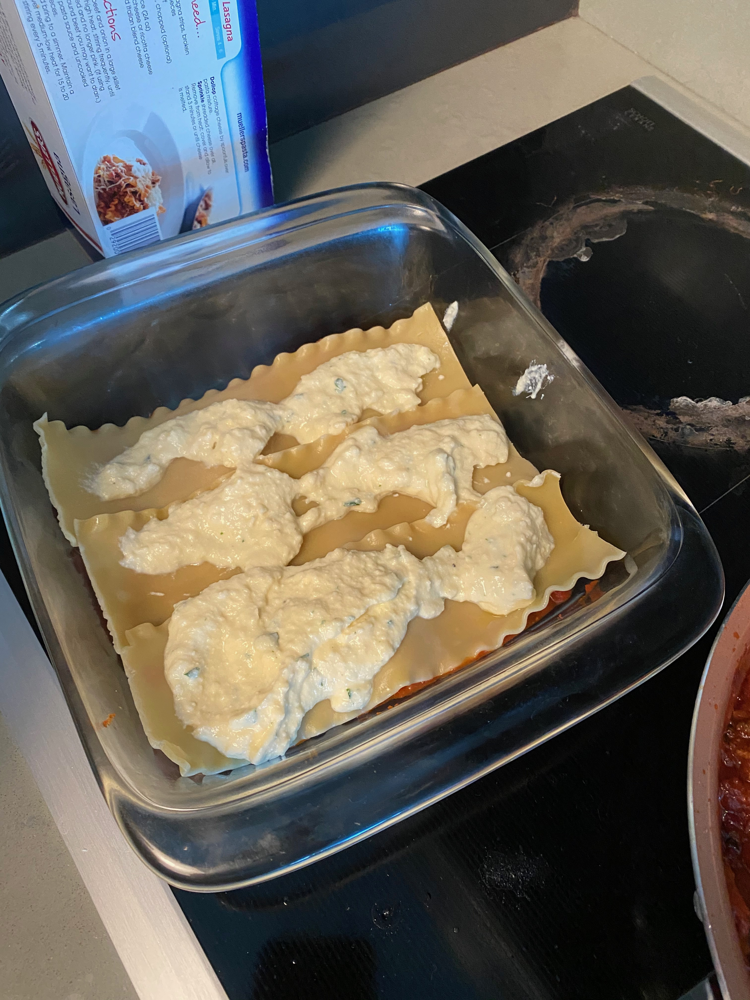
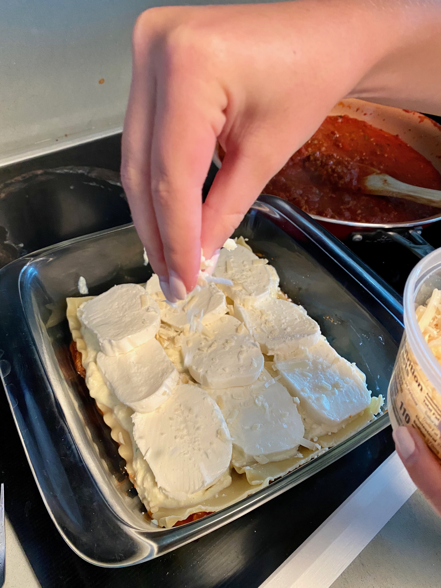

The most expensive lasagna in the world is served in Las Vegas in Portofino at the Mirage. It is the Diamond and Gold lasagna for $100 a slice.
About
Yields: 8 servings
Prep Time: 20 minutes
Total Time: 1 hour 15 minutes
Ingredients
- 3/4 lb. lasagna noodles
- 1 tsp. extra-virgin olive oil, plus more for drizzling
- 2 lb. ground beef
- 4 cloves garlic, minced
- 2 tsp. dried oregano
- Salt and Pepper
- 2 (32-0z.) jars marinara
- 16 oz. whole milk ricotta
- 1/2 c. freshly grated Parmesan
- 1/4 c. chopped parsley
- 1 large egg
- 2 lb. sliced mozzarella
Directions
- Preheat oven to 375 degrees. In a large pot of salted boiling water, cook pasta according to package directions until al dente, less 2 minutes. Drain and drizzle a bit of olive oil to prevent noodles from sticking together.
- Meanwhile, in a large pot over medium-high heat, heat oil. Cook ground beef until no longer pink, breaking up with a wooden spoon. Remove from heat and drain fat. Return beef to skillet and add garlic and oregano and cook, stirring,for
1 minute. Season with salt and pepper, then add marinara and stir until warmed through.
- Meanwhile, in a large pot over medium-high heat, heat oil. Cook ground beef until no longer pink, breaking up with a wooden spoon. Remove from heat and drain fat. Return beef to skillet and add garlic and oregano and cook, stirring,
for
1
minute. Season with salt and pepper, then add marinara and stir until warmed through.
- Combine ricotta, 1/4 cup Parmesan, parsley, and egg in a large mixing bowl and season with salt and pepper. Set aside.
- In a large casserole dish, evenly spread a quarter of the meat sauce across the bottom of the dish, then top with a single layer of lasagna noodles, a layer of ricotta mixture, and a single layer of mozzarella. Repeat layers, topping
the
last layer of noodles with meat sauce, Parmesan, and mozzarella.
- Cover with foil and bake for 15 minutes, then increase temperature to 400 degrees and bake uncovered for 18 to 20 minutes.
- Garnish with parsley before serving.
Tips
DON'T OVERCOOK YOUR NOODLES
Lasagna noodles need structure so they have a lot of ingredients layered between them! They can't be too mushy. Make sure to cook them until they're very al dente; they're ready typically two minutes before the amount of time on the box.
OIL 'EM UP
While you're making your beef and ricotta mixtures, your lasagna noodles will typically be hanging out in a colander, getting stuck together (worst nightmare). To prevent this, after you drain the noodles from the pasta pot, slick them
with
olive oil and lay them flat on a baking sheet to cool.
DRAIN BEEF
Sometimes we're in a hurry and skip this step when making a meat sauce and we always regret it, making the sauce taste so greasy! Draining the fat from the skillet is a must for your lasagna layers, which will already have a lot of fat
from
cheese.
SEASON YOUR RICOTTA MIXTURE
My Italian grandmother always added a secret ingredient to her lasagna: cinnamon. The ricotta mixture always gets overlooked and, therefore, tastes kinda bland. Make sure to season it generously with salt, pepper and parmesan, too!
DON'T OVER BAKE
Lasagna is one of those dishes that firms up a lot as it sets. Even though it might look like a cheesy, bubbly mess in the oven, if it's warmed all the way through it will be perfect once you let it sit for like 15 minutes. When you over
bake
the pasta you run the risk of the noodles drying out and getting too crispy.




